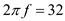

Step 1:
Refer to circuit diagram in Figure P2.92 in the textbook.
In frequency domain no change in impedance due to  and
and  because resistor is independent of frequency, but impedance due to capacitor is frequency dependent and its value is
because resistor is independent of frequency, but impedance due to capacitor is frequency dependent and its value is  .
.
Assume input impedance as  and feedback impedance as .
and feedback impedance as .
Calculate the gain of the amplifier.
Therefore, the transfer function,  of the high-pass filter is .
of the high-pass filter is .
Step 2:
Substitute  for
for  in the equation.
in the equation.
for high frequencies, the value of  is approximately zero. The simplifier transfer function is,
is approximately zero. The simplifier transfer function is,
Therefore, the gain, of the high pass filter at high frequencies is  .
.
Step 3:
Recall the transfer function of the high pass filter.

Therefore, the  frequency,
frequency,  is .
is .
Step 4:
At high frequencies gain of the high pass filter is  .
.
High frequency input resistance is  .
.
High-frequency gain is 40 dB.
The 3-dB frequency, .
Calculate the gain of the filter in decibels.
Substitute  for ,
for ,  for
for  in the equation.
in the equation.
Apply anti log.
Step 5:
Write the expression for 3-dB frequency of the high pass filter.
Calculate the value of capacitance from the equation.
Step 6:
The designed circuit is shown in Figure 1.
Step 7:
To calculate the frequency at unity gain, the gain of the filter is 1.
Write the expression for magnitude of the filter.
Substitute 1 for , for  ,
,  for
for  , and
, and  for
for  in the equation.
in the equation.
Square the equation on both sides.

Therefore, the frequency,  at which the gain of the high pass filter reduced to unity, is .
at which the gain of the high pass filter reduced to unity, is .